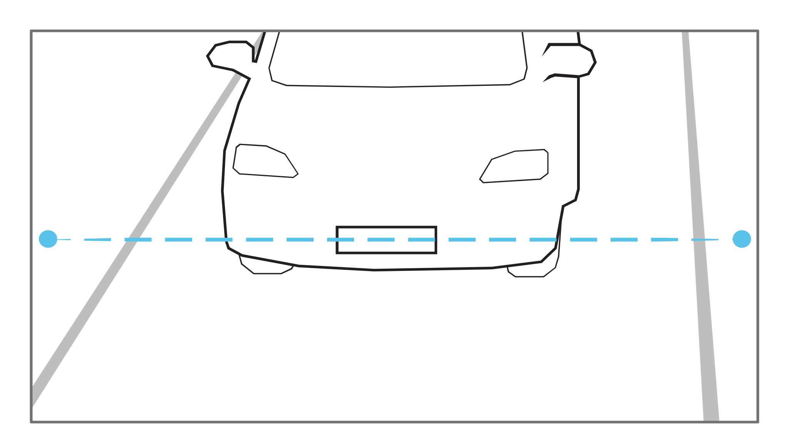
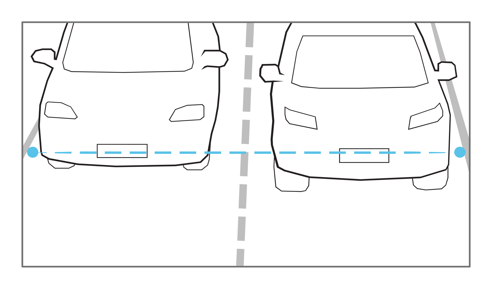
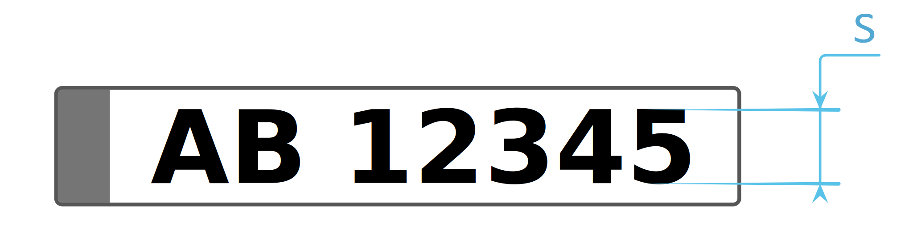

3. Field of view¶
When adjusting the Field-of-View (FoV) of an ANPR camera - that is, changing the lens focal length and focus - follow the following recommendations:
3.1. Detection line¶
A detection line is a virtual horizontal line in the field of view (FoV) that indicates where the expected license plate detection should occur. Most often it is the line in the middle of the height of the FoV:
{kind=link}
The requirements listed in the following subsections apply to the parameters of the license plate located on the detection line.
3.2. FoV width¶
The FoV width setting depends on the number of covered lanes (see section Lanes). Most often, the optimal width is 6 m at the height of the detection line.
For one lane, the width of the FOV should overlap about 25% with adjacent lanes:
For two lanes, the width of the FOV will cover exactly two lanes:
{kind=link}
3.3. FoV height¶
Setting the height of the FoV depends on two factors:
minimum character height (described in the next section),
maximum vehicle speed (combined with the number of frames per second - FPS).
The ANPR engine requires that for a given vehicle passage in the field of view, the license plate must be visible (recognized) at least twice. This means that the FoV at altitude must cover a sufficiently large stretch of road for the license plate to be visible (legible) twice at maximum speed. At the same time, other requirements should be met.
In this case, the user can modify the zoom, angle and FPS of the camera.
3.4. Character size¶
The recommended height of the license plate characters on the detection line is pixels.
{kind=link}
Warning
The height requirement refers to the image processed by the ANPR engine, not the native camera image. Currently, the image is resampled to 1024x576 pixels, even if the camera’s native resolution is 8 megapixels.
A character height of 16 pixels in the processed image is considered the optimal pixel density. The engine can still recognize arrays with smaller character heights (up to 10-12 pixels per character). However, the engine will not reject results based solely on the pixel size of the character.